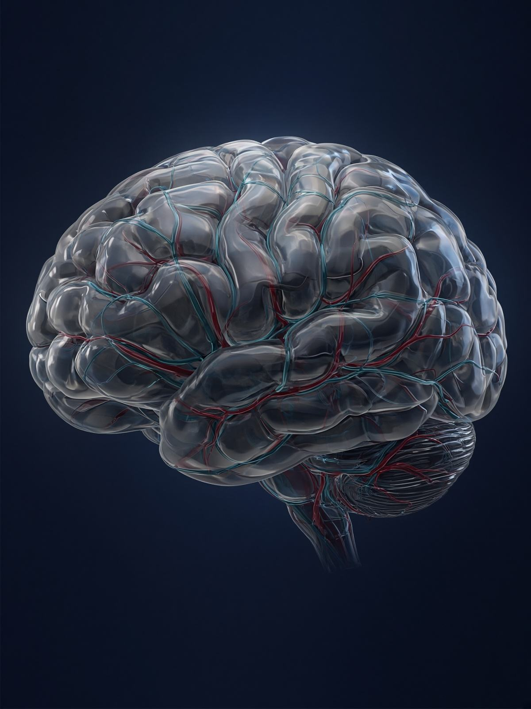

Loading the anatomical model…
Human Reference Atlas, adult male, simplified for the browser. Drag to turn. Not a patient study.
Critical care • body scan

Cortex and cerebral vessels

Loading the anatomical model…
Human Reference Atlas, adult male, simplified for the browser. Drag to turn. Not a patient study.
Critical care